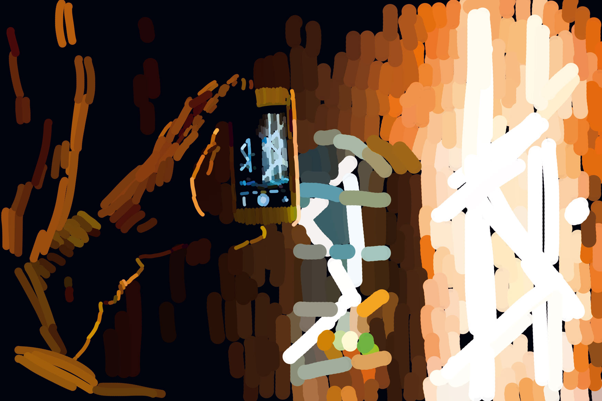
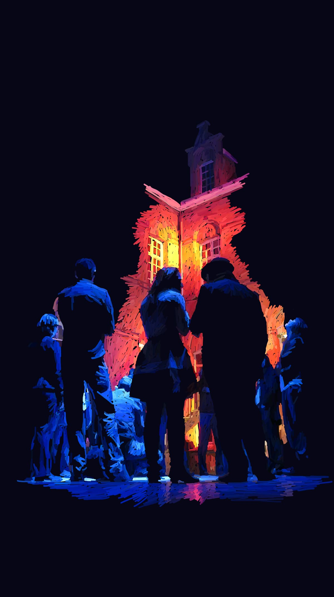
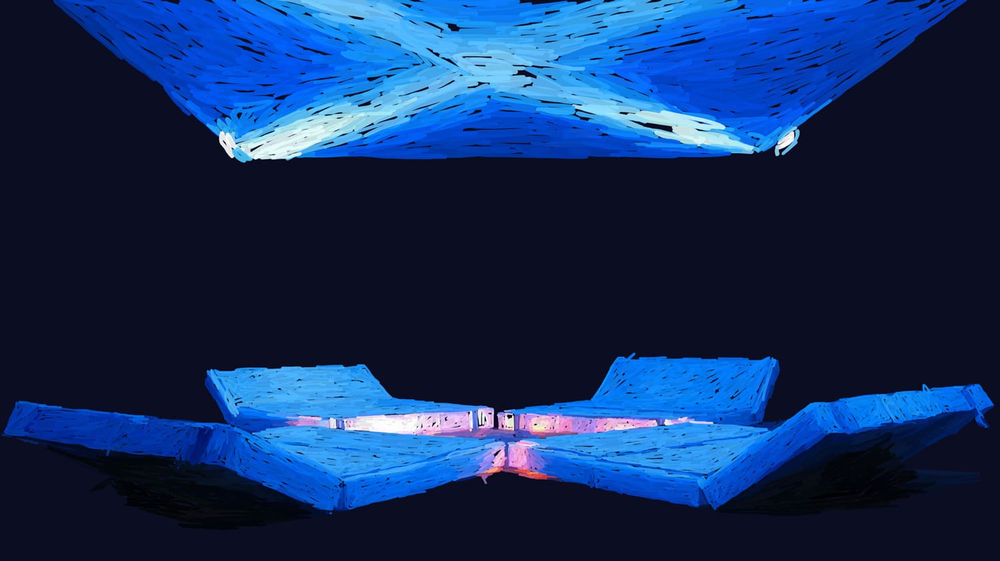
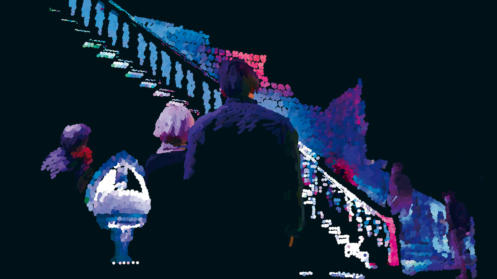
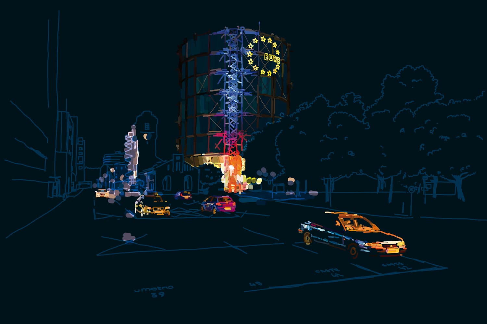
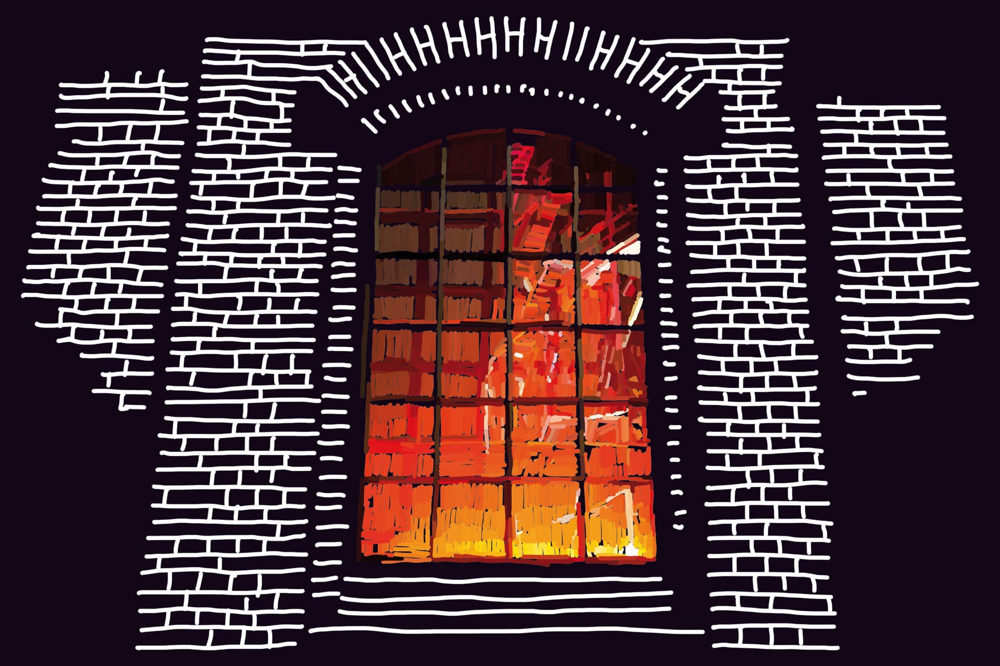
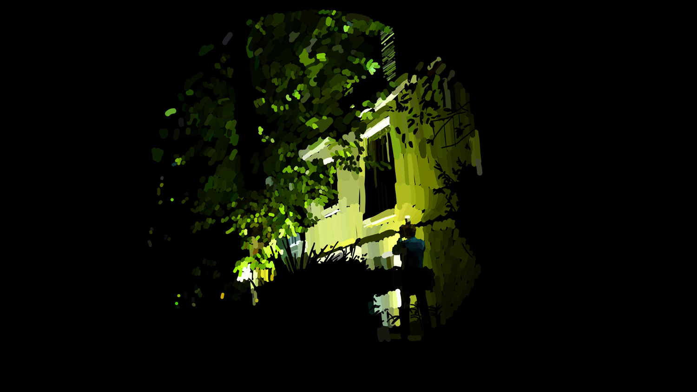
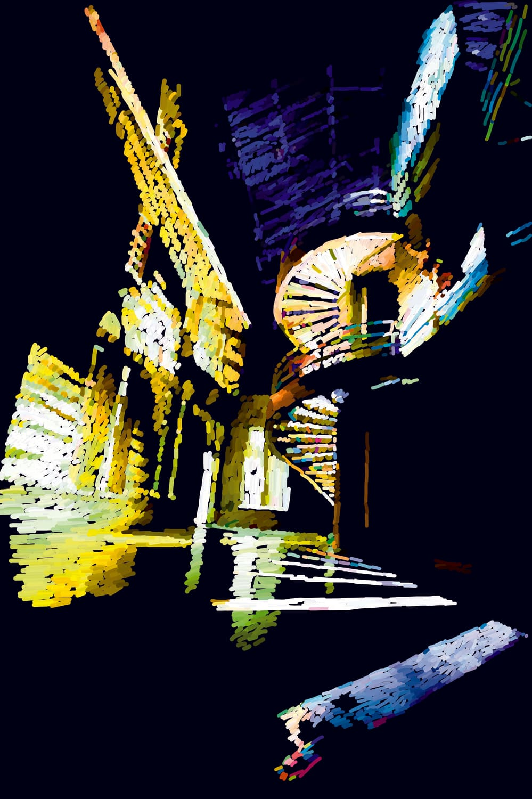
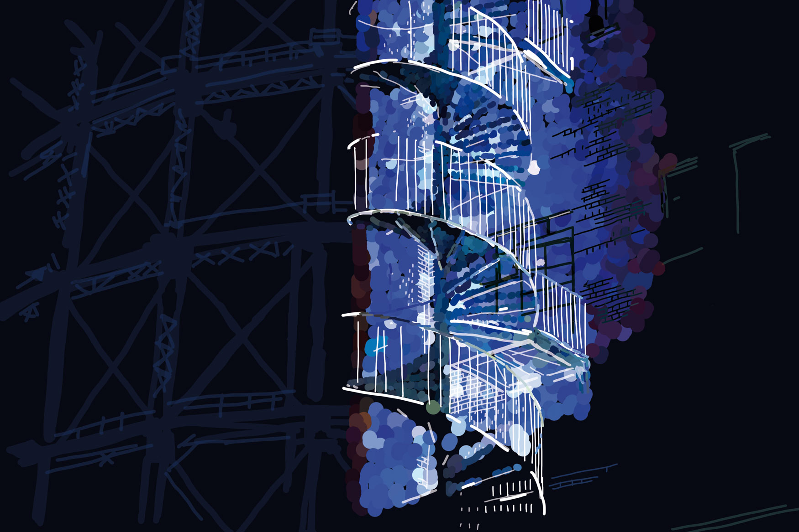
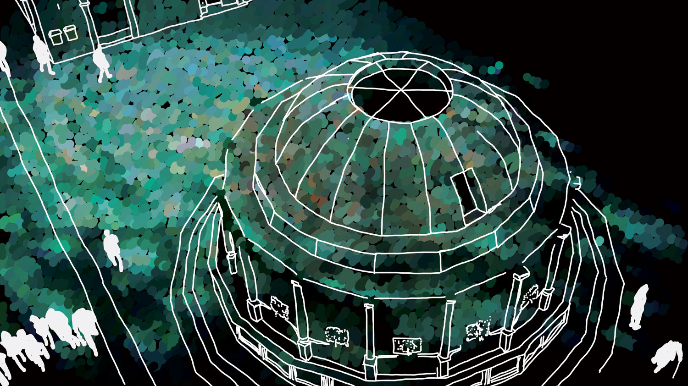

Philips Lighting — Traduire l'architecture en temps réel

Comment rendre visible ce qui n'est encore qu'à l'état de concept ? Lors de sessions européennes d'expérimentation urbaine pour Philips Lighting, mon rôle a été de capturer les idées foisonnantes d'architectes sur le terrain le jour — pour les traduire en illustrations claires la nuit. Le but : fournir un support visuel immédiat pour les réunions de restitution du lendemain.
Le Contexte
Dans le cadre d'événements européens organisés par Philips Lighting, des groupes d'architectes et d'urbanistes sont invités à expérimenter les produits de la marque à l'échelle de la ville. Leurs réflexions génèrent des concepts spatiaux riches, mais manquent d'un support visuel unifié pour être partagées entre équipes.
Mon Rôle
Intervenant sur site en tant qu'illustrateur et « traducteur visuel », en lien direct avec les équipes créatives et techniques de Philips.
Les Contraintes
- Temps extrême — Une journée de suivi terrain, une nuit à l'hôtel pour produire le rendu final.
- Volume — 1 à 2 illustrations abouties par groupe d'architectes.
- Complexité — S'approprier rapidement un vocabulaire lié à l'urbanisme et à l'ingénierie lumineuse.
L'Approche
- L'écoute active — Comprendre le système pensé par les architectes durant la journée.
- La priorisation visuelle — Définir un style graphique direct et fonctionnel pour la nuit de production.
- La fluidité — Créer une narration visuelle comprise en un coup d'œil.
Le Résultat
Les illustrations ont permis d'aligner immédiatement tous les participants sur la vision de chaque groupe — donnant corps à des concepts abstraits et facilitant les prises de décision de la direction de Philips.








